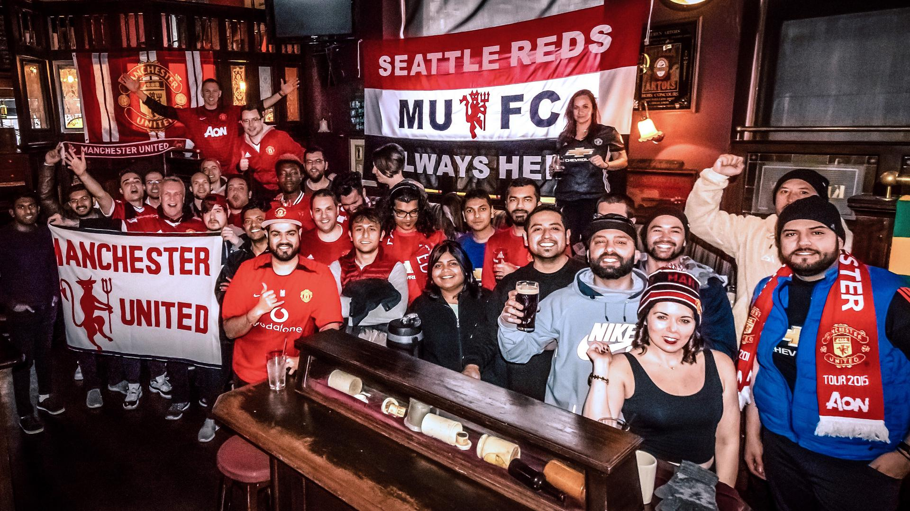

About Our Club

Pictures of our club members
About the Supporters Club
The Manchester United Supporters Club is a website created for fans of Manchester United to come together and share their love for the club. The club keeps up with latest match result, club news many events and photos from fans of the club! The aim is for the supporters to create a friendly community for football fans, especially younger supporters from all around the world!